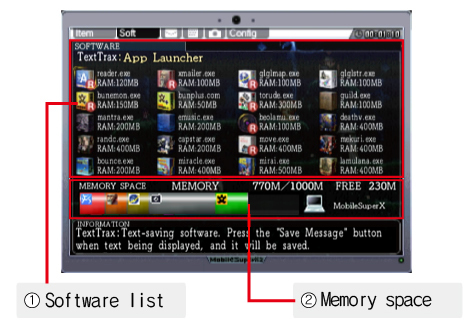

Utilizzando il "Mobile SuperX" potrai caricare programmi che ti saranno utili per completare l'avventura.
È possibile caricare più di un programma alla volta, ma la memoria è limitata quindi in alcuni casi dovrai disinstallare programmi per caricarne altri che più t'interessano.
Se caricando i programmi vedi un luccichio è perché si possono combinare tra di loro.
Descrizione

1. Elenco del software disponibile. Lo puoi ottenere nei negozi o addirittura nascosto tra le rovine.
2. Capacità di memoria del MobileSuperX. Non potrai caricare software senza disporre della memoria sufficiente.